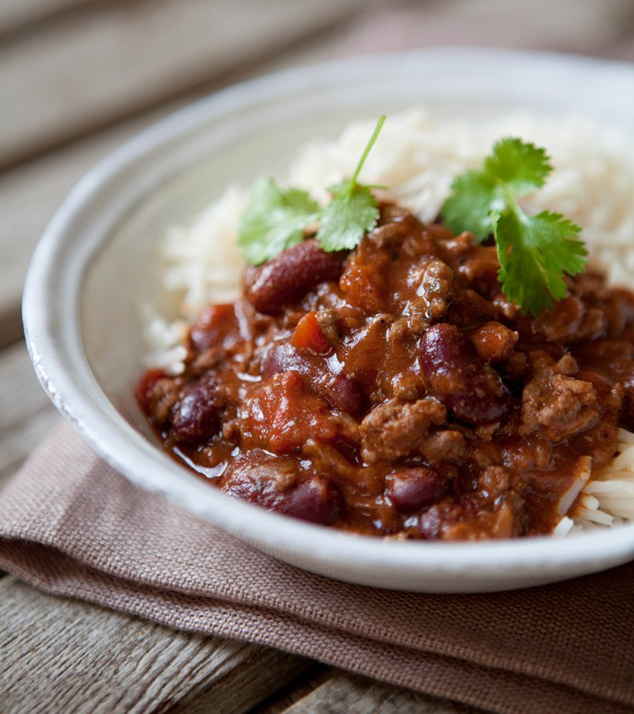

Chili

Description
A super easy Chili made completely in the slow cooker. Delicious, filling, and perfect for meal prep
Ingredients
- 800g-1kg mince beef (alternative: pork)
- 2 x 400g beans
- 2 x 400g diced tomatoes
- 1 capsicum
- 1 onion
- (Optional) 200g green beans
- (Optional) Avocado for serving
- 1 cup red wine + splashes for deglazing
- 2 bay leaves
- 1 tablespoon Worcestershire sauce
Spice mix
- 1 tablespoon paprika
- 1 tablespoon cumin
- 1 tablespoon oregano
- 2 teaspoon garlic powder
- 2 teaspoon onion powder
- 1 teaspoon cayenne pepper
- 1 teaspoon salt
Steps
- Finely chop all the vegetables and set aside
- Drain and wash beans
- Add mince and most of spice mix into a large pan and cook on high heat until browned. Transfer browned mince into the slow cooker
- Saute vegetables on medium heat and deglaze with red wine. Before fully cooked, transfer into the slow cooker
- Add the beans, diced tomatoes, Worcestershire sauce, bay leaves, and red wine into the slow cooker
- Cook on low for 7-8 hours, or high for 5-6 hours
- Serve with avocado